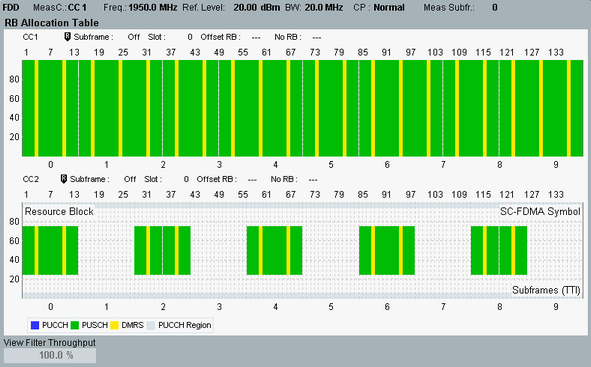

The resource block (RB) allocation table provides an overview of the detected RB allocation, including the detected channel type as color coded information.
With carrier aggregation, there is a separate table for each component carrier.

Each table presents the time domain on the X-axis (subframes and SC-FDMA symbols) and the frequency domain on the Y-axis (resource blocks). The allocated resource blocks are marked by colored bars. The colors indicate the detected channel type as listed in the legend below the table: Physical uplink control channel (PUCCH) or physical uplink shared channel (PUSCH).
"DMRS" refers to the demodulation reference signal within PUCCH and PUSCH.
The PUCCH region indicates the resource block regions at the edges of the channel where a PUCCH can be located. Within this region, automatic channel detection distinguishes between PUCCH and PUSCH. Outside of this region, automatic channel detection always assumes PUSCH.
For TDD signals, the downlink subframes and special subframes are also indicated.
- The number of subframes to be captured and shown on the X-axis is configurable. The offset of subframe 0 relative to the trigger event is also configurable. One specific subframe can be selected for slot measurements. For settings, see "Measurement Subframe".
- The number of resource blocks displayed on the Y-axis depends on the channel bandwidth.
- The number of SC-FDMA symbols per slot depends on the cyclic prefix type.
- The automatic detection of the channel type can be disabled for measurements that evaluate the "Measure Subframe". The detected channel type is then set manually as PUCCH or PUSCH irrespective of the PUCCH region and displayed accordingly in the table. For configuration, see "Channel Type".
The range of allocated resource blocks in the measured subframe can also be defined manually. For configuration, see "RB Allocation". - The location of downlink and special subframes for TDD signals is always defined manually and never detected automatically. For configuration, see "Uplink Downlink".
For background information on the UL structure, see "Resources in Time and Frequency Domain".
For "View Filter Throughput", see "Common View Elements".
For query of the table contents, see "RB Allocation Table Results".